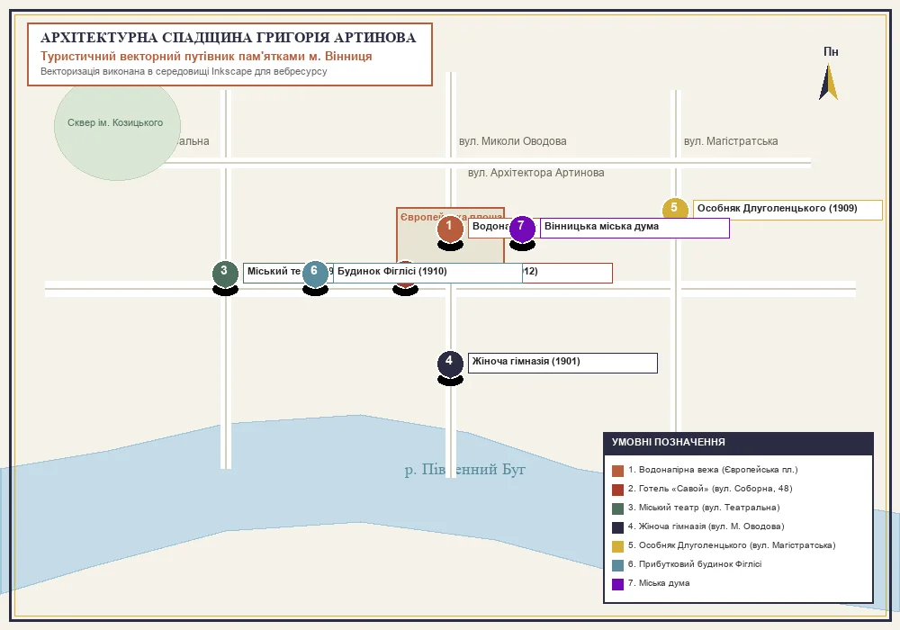

Туристична мапа архітектурних об'єктів
Векторний путівник пам'ятками спадщини Григорія Артинова у центрі Вінниці

1. Водонапірна вежа
Адреса: Європейська площа
Рік: 1912
Призначення: водогін, дозорна вишка, міський годинник.
2. Готель «Савой»
Адреса: вул. Соборна, 48
Рік: 1912–1913
Призначення: фешенебельний готель, пам'ятка архітектури.
3. Міський театр
Адреса: вул. Театральна, 13
Рік: 1910
Призначення: головна театральна сцена Поділля.
4. Жіноча гімназія
Адреса: вул. М. Оводова, 32
Рік: 1901
Призначення: освітній заклад (нині середня школа №2).
5. Особняк Длуголенцького
Адреса: вул. Магістратська, 44
Рік: 1909
Призначення: особняк капітана (нині дитяча художня школа).
6. Будинок Фіглісі
Адреса: вул. Соборна, 44
Рік: 1910
Призначення: прибутковий житлово-комерційний будинок.